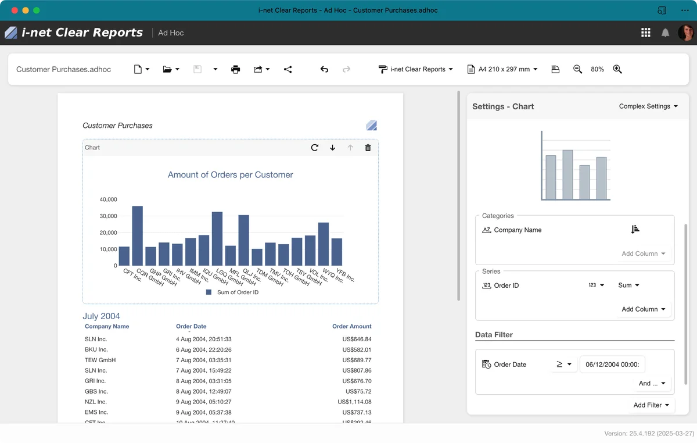
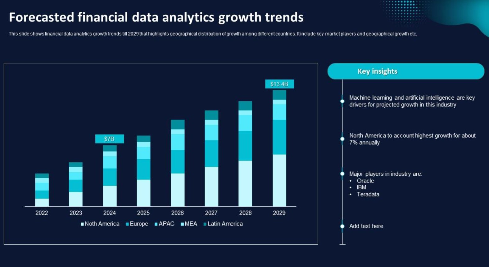

Dashboard Reporting
This project focuses on presenting information in a clean and direct way so that users can make decisions more quickly.
- Clear structure
- Easy summaries
- Decision support
Personal Portfolio
Examples of work I would like to highlight
These examples show the type of work I want to include in a professional portfolio. The page includes cards, lists, a table, a gallery, and JavaScript interaction.
This project focuses on presenting information in a clean and direct way so that users can make decisions more quickly.

This project demonstrates how repeated tasks can be simplified through better steps and cleaner workflow design.
The table below compares two portfolio project ideas and the main value of each one.
| Project | Main Goal | Key Skill | Outcome |
|---|---|---|---|
| Dashboard Reporting | Present information clearly | Data organization | Faster understanding of trends |
| Process Automation | Reduce repeated manual steps | Workflow improvement | Better efficiency and consistency |
| Portfolio Website | Show skills professionally | Web design basics | Stronger online presentation |
This gallery adds visual variety and demonstrates a responsive grid layout.


Type a project topic below and click the button to see a custom JavaScript response.